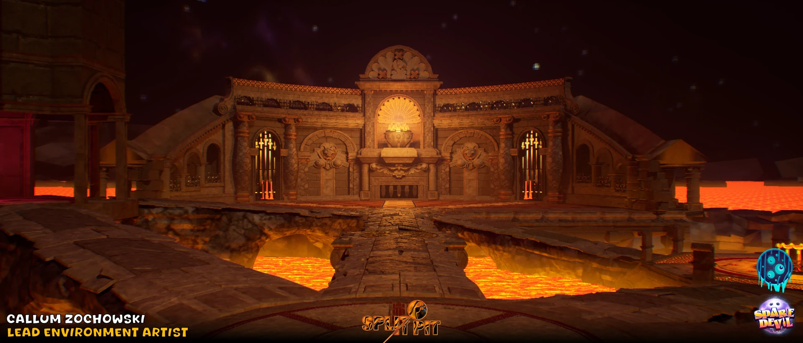

Sparedevil
Sparedevil is our debut FPS, made together at our newly founded indie studio, SludgePipeGames. Three months from initial concept to release, it was a wild ride that taught me so much as an individual and as a team member.
We chose an economic style, both as a fun creative constraint and to keep a realistic scope for releasing our first game independently on a near non-existent budget. Bowling being the game's theme let us use retro bowling animations as our main inspiration, giving it a quirky style that stayed simple and easy to optimise.
I was primarily responsible for level design and environment art design, and found a lot of enjoyment in a spin on ancient Greek architecture adapted with hellish bowling motifs and finishes. I also modelled and designed a range of the enemy pins, plus some of the unlockable tileable patterns for the customisation system.
- Role
- Level design and environment art
- Context
- SludgePipeGames
- Tools
- Unreal Engine, Blender, Substance 3D Painter, Substance 3D Designer, Photoshop
- Steam
- Sparedevil on Steam